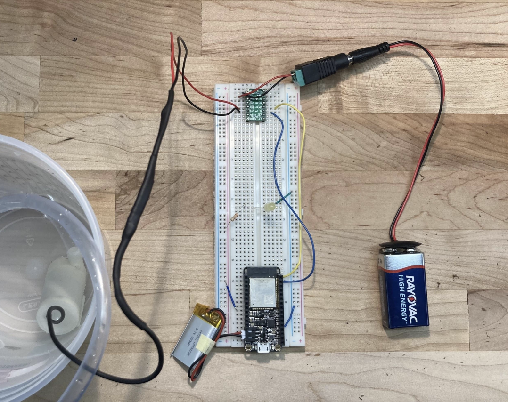
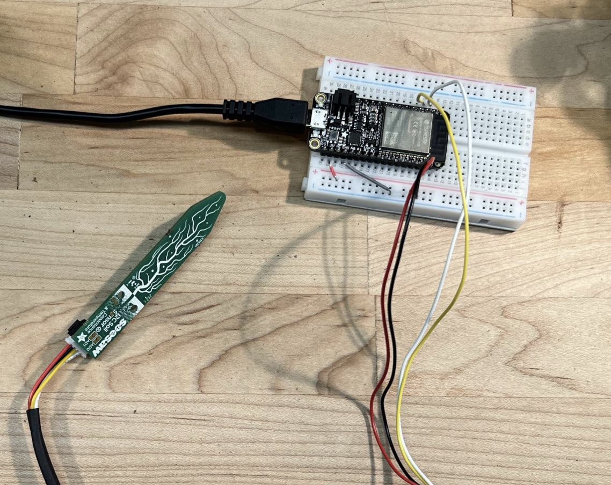
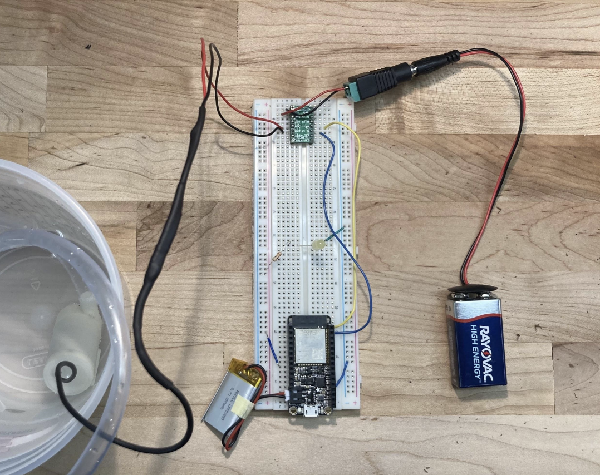
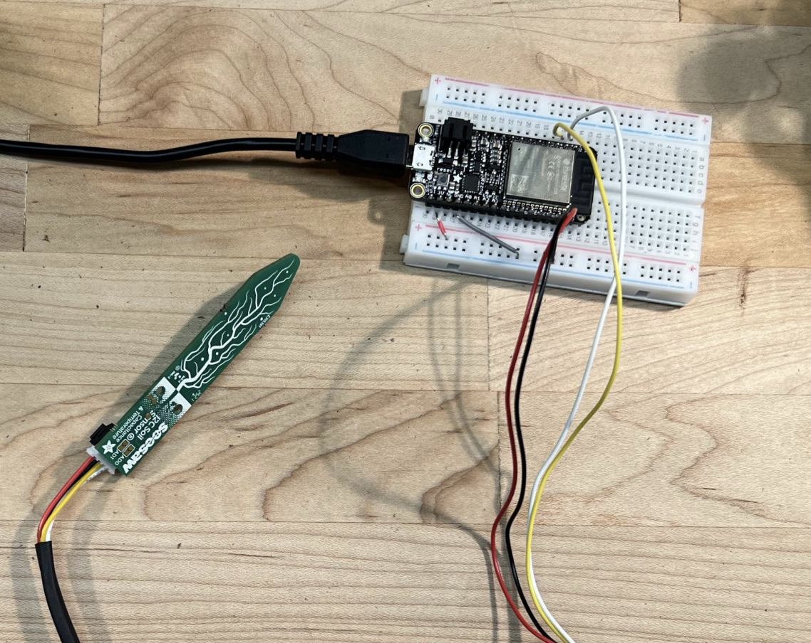

Automatic Water Dispenser
My portfolio showcases an innovative water dispenser system designed to automate plant watering processes. Leveraging the power of Adafruit IO, this system offers a user-friendly interface for selecting plant size and determining the desired amount of water to be dispensed. The functionality of this system relies on the seamless communication between two ESP32 microcontrollers.
One of the ESP32 microcontrollers is connected to an I2C capacitive moisture sensor, which continuously monitors the moisture level of the plant's soil. As soon as the moisture level reaches a specific threshold, a notification is sent to Adafruit IO, alerting the user that it's time to water the plant. The user interface then prompts the user to initiate the watering process.
The second ESP32 microcontroller, connected to a water pump, receives the command to release a specific quantity of water determined by the user. This precise control ensures that each plant receives the appropriate amount of water, optimizing their growth and health. The moisture levels are diligently monitored and visualized through a chart, allowing the user to observe and track the plant's hydration levels over time.
Overall, this automated water dispenser system combines the convenience of technology with the needs of plant care, simplifying the task of plant watering and ensuring optimal hydration for healthy plant growth.
Setup
 


